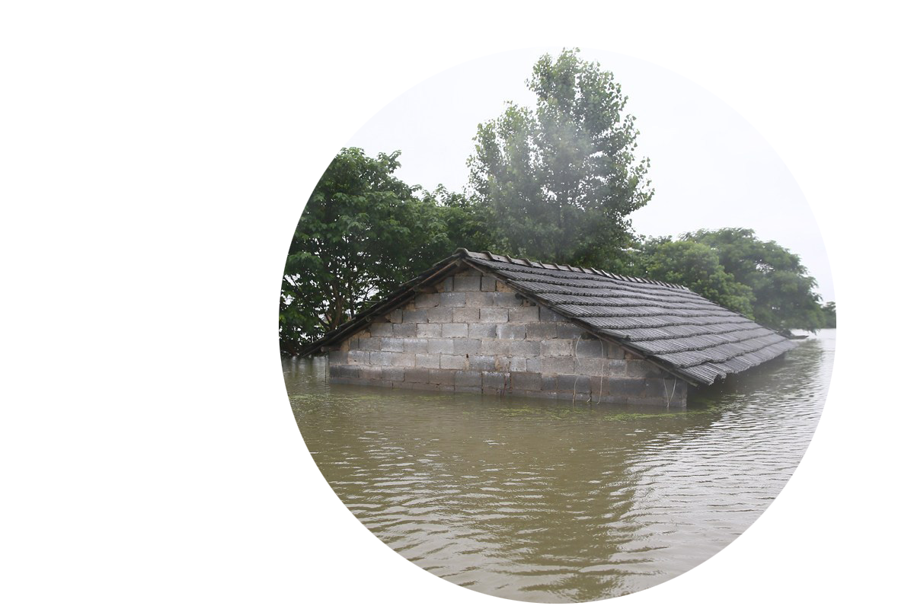

被忽视的局部
那些不为人知的过往
- 截至2018年，全国共有泄洪区 98 处，位于长江中下游地区的有 42 个，其中安徽省有 24 个，占了全国总数量的 24.4%
- 安徽省 21 个蓄洪区的总面积为 3060 平方公里，占全国蓄洪区总面积的 24% ，相当于 1.4 个日本东京的大小
- 2020年，长江流域，天降暴雨，在安徽省的16市105县中，仅有 10 县没被洪水侵袭，受灾人口 1046万 ，直接经济损失约 600亿

2021年7月，暴雨袭击河南，全国人民为之牵肠挂肚。
一时间，许多有关河南暴雨的词条纷纷冲上微博热搜榜单，大家都忙着关注雨情，关注当地居民的生活情况，关注捐款渠道。他们或许没有注意到，在众多关于河南的消息之中，出现了一条有关安徽的热搜话题。这个话题的热度缓慢上升，并最终占据了当日微博热搜榜单第四名的位置——它就是在2021年7月让人们为之动容的“安徽泄洪”。
那些天，几乎全中国的人民都在关注河南暴雨的情况，然而，却很少有人关注作为泄洪区的安徽在背后的默默付出。
有人在话题下留言：“不懂就问，泄洪的水最后会到哪里去呀？是地下吗？还是大海？还是蒸发掉了？”
“安徽。”有人在评论区中如是回答。
2021年7月10日晚至12日凌晨，豫西、豫北地区迎来最强一轮降雨天气，济源、鹤壁局部地区出现特大暴雨。2021年7月20日08时至7月21日06时，河南中北部出现大暴雨，郑州、新乡、开封、周口、焦作等地部分地区出现特大暴雨（250～350毫米），河南分布多地的10个国家级气象观测站日雨量突破有气象记录以来历史极值。
从“7·10河南特大暴雨”到“河南郑州7·20特大暴雨”，河南人民在暴雨肆虐中，展现出军民一心、上下一贯的勇气与决心，与全国其他地区的人民一同不惧挑战、奋勇抗击，在悲剧中重整旗鼓，为未来悲剧不再重演贡献力量。
然而，暴雨来自何处，又将向何方去？截至2018年年底，全国有98处泄洪区，其中42处位于长江中下游地区，安徽一省就占了24处，淮河流域19处，长江流域5处。被称作“上保河南，下保江苏”的安徽，实为中国最大的泄洪区，同样承接了作为上游的河南暴雨泄洪任务。
从“钦定泄洪区”到“舍小家、为大家”的“王家坝精神”，安徽在滚滚的洪水浪潮中与历史一同奔涌向前，其作为泄洪区的一面却较少为人所知。正因此，我们将视线转向安徽泄洪区。以数据图文的形式，描绘一个常在公众视野之外的安徽泄洪区。
众所周知，想要将滞留在一个地方的洪水排出，除了通过自然蒸发和被覆盖在水面以下的土壤吸收这两个作用非常有限的方法之外，就只能通过城市的排水网络将洪水排到附近的天然水体之中。
河南省内有三条主要河流——黄河、海河和淮河，还有一部分河流属于长江流域。由于黄河在河南省的汇流面积很小，并且在河南境内的这一段是地上河，河床普遍高出地面5-8米，最高处甚至能达到10米——暴雨形成的洪水无法通过黄河流向海洋。而海河虽然连系了河南北部的一些地市，但由于其河道狭窄，运输洪水的能力并不出色。最后再除去少量流向长江流域的洪水，河南剩下的大部分洪水都会流入淮河流域。
说到淮河，想必大家都不陌生，我们在中学地理课上学习中国南北方地理分界线时都接触过淮河这一重要的地理标志。可鲜为人知的是，淮河流域是我国洪涝灾害最频繁的区域。
在15世纪到20世纪的这500年里，淮河流域发生过较大旱灾280次。从16世纪到新中国成立的450年间，淮河流域每百年平均发生水灾94次，几乎可以说是三年两淹，两年一旱，灾害年占整个统计年的90%以上，不少年份洪涝和旱灾并存。而且往往一年内涝了又旱或者旱了又涝的现象时有发生，年际之间连旱连涝的情况也经常出现。这一切的一切都给世代生活在这片土地上的人民留下了许多痛苦的回忆。
除此之外，由于河南省位于淮河流域的上游，安徽省位于淮河流域的下游，原本滞留在河南内的洪水则会顺着地势的高低差通过淮河流入地势本就平坦的安徽。
这样一来，安徽除了要处置长江流域的泛滥洪水，还要承担积蓄淮河上游洪水的艰巨任务，压力巨大无比。一方面，这份压力来自于客观存在的泄洪问题；另一方面，在互联网时代，地方政府的所作所为，都无时无刻不在受到关注与评论——在“人人都有麦克风”的时代，压力亦是来自四面八方的。
那么，在此等压力之下，等待着安徽的，又是什么？
不同于备受关注的河南，安徽在此次洪水事件中的关注度并不高。可就在安徽仅有的几次热搜里，却充斥着一些谩骂和嘲讽的说辞。“卖惨”“瞧不起安徽人”“穷”等言论频繁在网络上出现。
面对各种各样的的冷言冷语，安徽人民虽然气愤，但是也早就习以为常。长期以来，许多地区的人民对安徽的误会非常深。在一些经济较为发达的地区，歧视安徽人的现象也尤为严重。在一些人眼中，安徽总是和经济落后和人民素质低下这些标签挂钩，来自安徽的外来务工人员也只能从事建房屋、卖早点、洗盘子等所谓“低人一等”的工作。
但事实早已不是这样，现在的安徽早就不再只是过去世人眼中的“贫穷落后只会种地”，而已经成长为中国重要的，“科技创新策源地”“新兴产业聚集地”和“改革开放新高地”。
面对滚滚而来的洪水，安徽人民没有叫苦不迭，而是选择了默默接收，因为大家都知道如果安徽不接下这些水，遭殃的就将是整个中国，为了大家而舍弃小我，或许也没有什么不值得的。
在安徽的阜南县有一个名叫王家坝的小镇，它位于安徽与河南的交界处，与河南的淮滨、固始县只有一河之隔，是淮河上游与中游的分界点。被称为“千里淮河第一闸”的王家坝闸，就坐落在这里。被世人咏传歌颂的“王家坝精神”正是诞生于这座大坝。
它是淮河防汛的“风向标”。每当王家坝水文站的检测水位接近保证水位29.30米时，作为预备役的蒙洼蓄洪区就要面临着准备被启用的命运。
2020年7月20日8时31分，未缓解淮河防汛压力，按照国家防总的统一部署，王家坝13空闸门全部开启向蒙洼蓄洪区分洪。
随着闸门的打开，滔天洪水便如千军万马般涌入蓄洪区，迅速吞没区域内所有的良田和庄稼，它就像一张巨大的口袋，主动将所有洪水收入囊中，以保证下游重点城市的安全。然而，像这样的蓄洪任务，王家坝在1954年建成以来的68年里已经接到了16次。蒙洼蓄洪区累计分洪量也已经超过78亿立方米，相当于557个西湖的水量。
2021年7月19日晚7点，阜南县接到了蒙洼非安全区人员转移通知，要求迅速转移人员和物资，做好蓄洪区启用准备。从通知转移到全部转移安置，全县只用了8个小时，速度如此之快在泄洪历史上也是少有的。在蒙洼泄洪区里，有6个保庄圩和131个庄台，这些庄台的位置高于王家坝闸的安全水位线。开闸蓄洪时，人们就生活在孤岛一般的庄台上。
相对而言，人员财产容易转移，可是田里的庄稼、栏里的家禽、塘的水产却难以带走。开闸蓄洪的通知，就像对这些农产的死亡宣告。面对肆虐的洪水，村民们只能眼睁睁地看着自己的心血被悉数吞没。
在淮河近郊从事农业生产的农民们都将“种地”称为“闯”。因为淮河极易泛滥，农户们每一次的播种和补苗都带有浓厚的“赌博色彩”。“不上水就好了，就有收成了。”这是农民们在蓄洪区进行农业生产时最常说的话。
中国城镇化促进会城乡统筹委副秘书长、全国工商联农业商会专家委员会主任孙文华告诉中国新闻周刊，蓄洪区作为安徽省的自然敏感地带，不是个例，需要政府把蓄洪区作为一个课题进行研究策划。
事实上，濛洼蓄洪区并非今年才提出，当地人也知道蓄洪会给经济造成损失，地方政府也出台了“鼓励适应性农业生产的政策”，并严格控制人口规模。
孙文华表示，既要减少泄洪带来的经济损失，又要合理利用这片土地，这就需要“策划”和“优化”。策划是将180平方公里的蓄洪区重新定位，优化是从土地综合利用的角度，重新规划利用蓄洪区的地形地貌、自然生态，一方面通过土地指标转移获取安置房的资金，有序转移当地人口；另一方面由国有农投企业整体规划，统一经营，以低成本的投入方式获取市场化的多元收入。
安徽财经大学教授唐敏认为，蓄洪区平常年份根据地理环境与季节特点进行农业生产。蓄洪后，根据水情和季节，尽可能播种应季作物，以减少损失；国家根据相关补偿文件规定给予适当补偿及政策支持。
在中国人民大学农发院博士、好农场创始人程存旺看来，蓄洪区内完全可以发展农业，但是需要新的理念。应该发展生产周期比较短的种植业，损失可控。此外要因地制宜，低洼地区开垦成鱼塘、生态湿地，种植芦苇和水生植物，发展观光农业，同样能产生经济效益。不宜提倡重资产投入的养殖业，养殖业不仅容易造成水体污染，而且投入较大，一旦洪水袭来，损失也相对较大。
淹没，重建，再淹没，再重建，这样的过程，六十年来生活在蒙洼里的居民已经经历了整整16次。而像蒙洼这样的泄洪区，安徽还有很多个。他们默默无闻的为了国家奉献着，成为了被牺牲的“局部”。在网络上，大家都说安徽泄洪是“上保河南，下保江苏”的举动，这或许有些许夸张，但我们必须要承认，安徽人民长期以来对淮河流域抗洪事业所做出的贡献是不可估量的。被牺牲的“局部”是发展更好的“整体”，这些“局部”需要被“整体”记住。
没有理所应当 只有慷慨担当
小徽的赤诚需要被所有人看见